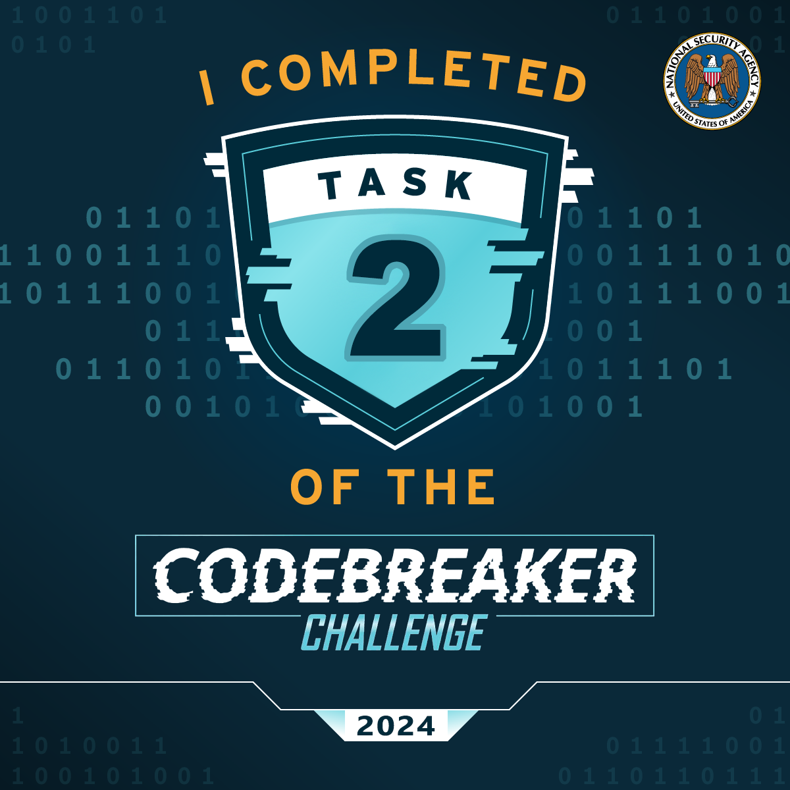

Task 2 - Driving Me Crazy - (Forensics, DevOps)
Having contacted the NSA liaison at the FBI, you learn that a facility at this address is already on a FBI watchlist for suspected criminal activity.
With this tip, the FBI acquires a warrant and raids the location.
Inside they find the empty boxes of programmable OTP tokens, but the location appears to be abandoned. We're concerned about what this APT is up to! These hardware tokens are used to secure networks used by Defense Industrial Base companies that produce critical military hardware.
The FBI sends the NSA a cache of other equipment found at the site. It is quickly assigned to an NSA forensics team. Your friend Barry enrolled in the Intrusion Analyst Skill Development Program and is touring with that team, so you message him to get the scoop. Barry tells you that a bunch of hard drives came back with the equipment, but most appear to be securely wiped. He managed to find a drive containing what might be some backups that they forgot to destroy, though he doesn't immediately recognize the data. Eager to help, you ask him to send you a zip containing a copy of the supposed backup files so that you can take a look at it.
If we could recover files from the drives, it might tell us what the APT is up to. Provide a list of unique SHA256 hashes of all files you were able to find from the backups.
Downloads:
Prompt:
Solving the task:
In progress
The solution:
In progress
That is correct!
